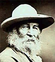

-
...
Hay que estar ciego para oponer la justicia a la caridad, para creer que su ámbito es diferente, que una es más amplia que la otra, que hay una caridad más allá de la justicia, o una justicia más acá de la caridad.
Cuando se oponen las dos nociones, la caridad no es más que un capricho, por lo general de origen vil, y la justicia no es más que la coacción social. Quienes no advierten esto, o bien nunca se han encontrado en una de esas situaciones donde la injusticia está totalmente permitida, o bien estaban instalados en la mentira hasta tal punto que habían creído en ella y practicaban fácilmente la justicia.
[...]
Muchas controversias entre la derecha y la izquierda se reducen a la oposición entre la preferencia por el capricho individual y la preferencia por la coacción social; o, más exactamente quizá, entre el horror de la coacción social y el horror del capricho individual.
Ni la caridad ni la justicia tienen nada que ver con esto.
La justicia tiene como objeto el ejercicio terreno de la capacidad de consentimiento. Preservarla religiosamente en todos los lugares donde existe, tratar de crear las condiciones donde está ausente: eso es amar la justicia.
La palabra «justicia», única y tan hermosa, encierra toda la significación de las tres palabras del lema francés. La libertad es la posibilidad real de conceder un consentimiento. Los hombres no tienen necesidad de igualdad más que en relación con ella. El espíritu de fraternidad consiste en desearla para todos.
La posibilidad del consentimiento es ofrecida por una vida que contiene motivos para el consentimiento. La indigencia, las privaciones del alma y del cuerpo impiden que el consentimiento pueda operar en el secreto del corazón.
La expresión del consentimiento no es indispensable más que en segundo lugar. Un pensamiento no expresado es imperfecto; pero si es real, puede abrirse caminos indirectos hacia la expresión. La expresión a la que no corresponde ningún pensamiento es una mentira, y hay siempre en todas partes posibilidad de mentir.
Dado que la obediencia es, de hecho, la ley imprescriptible de la vida humana,
sólo hay que establecer la diferencia entre la obediencia consentida y la obediencia no consentida.
Donde hay obediencia consentida, hay libertad; y ésta no se encuentra en ninguna otra parte.
La libertad no puede residir en un Parlamento, en la prensa, en ninguna institución. Reside en la obediencia. Allí donde la obediencia no tiene un sabor cotidiano y permanente de libertad, no hay tal libertad. La libertad es el sabor de la verdadera obediencia.
Las formas y las expresiones del consentimiento varían mucho con las tradiciones y los medios. Así, una sociedad compuesta de hombres mucho más libres que nosotros puede, si es muy diferente de nosotros, parecernos despótica en nuestra ignorancia. Ignoramos que hay fuera del ámbito de las palabras diferencias de lenguaje y posibilidades de contrasentidos. Y mantenemos esta ignorancia en nosotros, porque adula en todos nosotros un gusto vergonzoso e inconfesado por las conquistas que esclavizan so capa de liberación.
Por otra parte, hay una cierta especie de afecto ligado a la esclavitud que, lejos de ser un signo de consentimiento, es el efecto directo de un sistema de coacción brutal; porque en la desdicha la naturaleza humana busca desesperadamente compensaciones sin importar dónde. Odio, indiferencia, apego ciego...: todo le parece igualmente bueno para escapar del pensamiento de la desdicha.
Donde hay libertad florecen la dicha, la belleza y la poesía; quizá sea ésta su única marca segura.
El pensamiento democrático contiene un grave error: confunde el consentimiento con una determinada forma de consentimiento que no es la única y que puede fácilmente, como todas las demás formas, ser una forma vacía.
Nuestra democracia parlamentaria era vana [*], ya que despreciábamos a los jefes que elegíamos, guardábamos rencor a los que no habíamos elegido y obedecíamos a todos a regañadientes.
El consentimiento no se vende ni se compra. Por consiguiente, cualesquiera que sean las instituciones políticas, en una sociedad donde las transacciones monetarias dominan la mayor parte de la actividad social, donde casi toda la obediencia se compra y se vende, no puede haber
libertad.
...
Simone Weil
En el sitio de Peter Kreeft, se agregaron varias charlas en audio.
Apologética, pero inteligente. O, según el momento: inteligente, pero apologética.
Bueno... tampoco taaaaan apologético; y, tal vez, tampoco taaaan inteligente. Pero si al resultante le sumo el valor agregado de practicar un poco de inglés oral, puede venirme bien; a mí, al menos.
Me informan que First Things, una publicación (en inglés) sobre temas religiosos, al parecer inteligente y equilibrada, con bastante prestigio entre los católicos -digamos- conservadores de EEUU, sacó un nuevo número. En la web se encuentra completo el número anterior.
Citemos, por ejemplo: True and false reform por el cardenal (jesuita) Dulles, que según dicen tiene lo suyo.
Yo me imagino que nuestros nietos llorarán de risa cuando alguien les cuente sobre el lenguaje inclusivista/antisexista que algunos de sus abuelos querían impulsar...
El uso del @ sobre todo, me parece de lo más hilarante. Acá una muestra (de eso y todo el espíritu que casi indefectiblemente acompaña a eso), de unos dominicos españoles:
-
... El estar junt@s nos dió la oportunidad de percibir las conexiones, amistades, colaboración y apoyo mutuo. Empezamos de relacionarnos y a valorarnos un@s y otr@s cuando, mas tarde, caminamos juntos por las viejas calles de Roma. La dinámica de pasar la bola de lana, en la sesión introductoria, nos preparó más aún para el peregrinaje común a pesar de retos de distancias, culturas y lenguajes. ...
.. y a propósito de recopiladores y de originales. Uno que supo recopilar y apropiarse, y que también supo -como hombre vivo que era- ser original cuando había buenos motivos (bueno, no siempre...):
Juan de Maldonado ,cura jesuita, 1533-1583, español, -para más datos, andaluz, según dicen. Entre otras cosas, tiene unos notables "Comentarios a los cuatro evangelios", muy sabrosos, con mucho sentido común, conocimientos bíblicos y respeto por los Padres y la tradición en general. El primer exégeta moderno, alguno diría.
Venía la semana pasada leyendo en el subte algo del tomo
correspondiente al evangelio de San Juan (el único que tengo)
y le encontré una salida que me hizo reír. Repasa Maldonado
las explicaciones dadas sobre un cierto versículo (interesante, de paso,
la cuestión, pero no es el momento...); algunos (Crisóstomo,
Teofilacto , Eutimio...) opinaban una cosa, otros (Cirilo, Leoncio) opinaban
distinto, otros más allá (Agustín, Beda, Ruperto) apuntaban para otro lado...
Maldonado sopesa a unos y a otros, pero en lugar de
señalar cuál de ellos prefiere y por qué,
se sale con una interpretación propia. Y después de explicarse,
se disculpa por ser original ...
y se despacha con una justificación ...andaluza:
-
No niego que esta interpretación mía no la he visto en ningún
autor. Pero me gusta más que la de Agustín y los otros
—muy probable, es verdad; porque esta mía
está más en contradicción con la teoría calvinista,
y esto solo es para mí un formidable argumento a favor.
Sobre esa ansiedad -tan extendida y tan vana- por ser original, Jaime cita:
- "una idea que nunca ha tenido nadie tiene todas las probabilidades de ser un disparate"
Claro está...!
[Y acá vendría un alegato en favor de
la tradición, y en contra de la modernidad, etc, etc, etc...
pero no es lo mío, por suerte].
Pero puesto que, en verdad y para lo que importa, de lo que se trata
es de apropiarse de lo que han hecho otros mejores que uno...
(y está bien: "apropiarse" no significa aquí
"robar", significa más bien recibir, acoger,
y hasta dar vida; la apropiación que se da cuando
uno conoce una poesía, una canción, sería un analogado ... inferior),
me apropio entonces de una página del P. Castellani:
-
... No puedo dejar de hablar. Y no puedo dejar de ver.
Pero ¿es que en realidad veo algo? Yo no hago más que sacar en limpio.
Yo pongo en limpio lo que han visto innumerables hermanos míos en el dolor y la visión lancinante.
Como aquellos monjes antiguos que hacían "coronas áureas" —hay una atribuida a Tomás de Aquino.
Como aquel anacoreta que copió en un grueso cuaderno todas las comparaciones aplicables al Santísimo Sacramento que hay en Virgilio y en Homero.
Yo colecciono los dichos de los iluminados que al toparlos encienden en mí como un destello doloroso. Los dichos que se cumplen en mí.
Antiguos y modernos, poetas que han superado la poesía y filósofos que han despreciado su filosofía, que han muerto, o visto morir su poesía y su filosofía.
¿Cómo osaría afirmar yo una cosa, yo solo ?
No me atrevo a decir nada que no haya dicho antes un iluminado.
Y donde están dos unidos en mi nombre, allí estoy Yo
en medio de ellos.
Y en la boca de tres testigos toda verdad
se acepta.
Yo soy el testigo pasivo, a quien para ver que lo dicho por los
otros es verdad, le basta la llaga de su alma;
yo soy el "corpus delicti".
Yo padezco mi época...
Leonardo Castellani
"Los papeles de Benjamín Benavídez"
Como el lector atento habrá observado, cada post tiene ahora (abajo a la izquierda) un link para recomendarlo a un amigo; o sea, para enviar el link por mail a algún conocido.
En prueba, puede decirse. Si alguno encuentra algún problema o tiene alguna sugerencia, acá estamos.
Escuchando el partido de fútbol por radio (en realidad, no lo estaba escuchando -suelo usar las transmisiones de fútbol como música de fondo, digamos- pero esto alcanzó a llamarme la atención):
-
... sigue avanzando X con pelota dominada.
Se acerca al área. Ingresa a la misma. ...
El mismismo es un vicio idiomático
que hace estragos en los medios, en los documentos "formales",
y en todos lados. Junte ud. un temor excesivo -casi supersticioso-
ante la inelegancia de repetir un sustantivo con la miseria idiomática
actual, y el resultado será una afectación de peor gusto que la
inelegancia que se quería evitar.
-
... El "Esbozo" (prácticamente la gramática oficial de la Academia), con una dureza y energía poco usuales en esta obra, llama "la atención sobre el empleo abusivo que la prosa administrativa, periodística, publicitaria, forense y algunas veces la prosa técnica hacen hoy del anafórico el mismo, la misma, por considerarlo acaso fórmula explícita y elegante. Pero no pasa de vulgar y mediocre..." El virus de esta moda parece haberlo invadido todo. ...
Dos ejemplitos entre cien mil de nuestros medios:
"Muy buenas condiciones de humedad en los suelos de esta región. Se destacan en la misma los intensos fríos de los últimos días"
[*].
"...el Régimen Jurídico del Automotor se convertirá en un curso de posgrado universitario. Y el mismo apostará a una mayor dinámica de aprendizaje práctico"
[*]
Pero creo que el mejor ejemplo es el que se le ocurrió a Dolina:
Se trataba del guión de una película. Tarzán está acompañando
a unos exploradores a través de la selva. Los civilizados
dicen algo sobre peligrosidad del ambiente, la violencia, los animales salvajes, etc, y Tarzán comenta:
-
— Y, sí... es así. Uds saben: acá, en la selva, rige la ley de la misma.
Me entero por Gerard de que un 17 de septiembre murieron Hildegarda de Bingen (siglo XII) y Adrienne von Speyr (siglo XX).
De la segunda comenté algo alguna vez (y no sé mucho más).
De (santa?) Hildegarda, monja benedictina medieval, abadesa, escritora,
mística, música, médica y no sé cuántas cosas más, conozco aún menos.
Algo más acá (en inglés hay mucho para mirar).
Hace poco escuché por casualidad en la radio algo de ella, y
sorprendentemente -soy de oído torpe y lento- me pareció muy lindo.
Jamás confío en esas primeras impresiones, pero me dieron ganas
de conocer más. Si alguien tiene información o recomendaciones
(links, mp3, o grabaciones),
mande.
PS: Ignacio me recomienda:
Ensemble Organum - Hildegard von Bingen:
"Laudes de Sainte Ursule" (Harmonia Mundi - 901626 )
Compré algunos libros el fin de semana.
Y me da un poco de vergüenza confesarlo.
¿Porque tengo demasiados libros (y demasiados sin leer...) ? No, no tanto por eso... a eso ya me he resignado.
¿Porque me creo muy ecuménico, comprándome un tomo de las obras completas de Lutero, cuando me debería conocer mejor los documentos católicos ? Nah...!
Lo que realmente me da vergüenza es .... haber comprado tres libros sobre Windows + Office + VBA. Para uno, (que tiene su link a Slashdot, que las va de medio techie-nerd, etc) esto es casi tan humillante como haber comprado un libro de Bucay. Pero [acá venía una lista de atenuantes; pero no, afrontemos el ridículo a pie firme].
De todos modos, los libros técnicos yanquis (al menos, los que no son demasiado vulgarizadores, los que tienen calidad dentro de su ramo) suelen tener lo suyo; hay escritores que tienen su gracia cuasi-literaria, y algún que otro rasgo de cultura, rompiendo un poco el estereotipo nerd...
Hoy, para una clase que tenía que dar,
venía hojeando un libro sobre "Procesamiento de Imágenes"
(tema de poco vuelo, incluso en lo técnico); el autor
adorna cada capítulo con alguna cita "literaria", relacionada
con el título; una práctica frecuente, y -para uno- algo refrescante.
Así, por ejemplo, el árido capítulo 3, titulado "Image Transforms"
aparece con un epígrafe bíblico, de la carta de San Pablo a los Romanos:
-
"... Y no os acomodéis al mundo presente, antes bien transformaos mediante la renovación de vuestra mente"...
Y -retomando lo que decía al principio, sobre bibliotecas demasiado pobladas- recuerdo el caso de un libro de programación de computadoras (lenguaje Perl, creo) que en el capítulo dedicado a "Libraries" (bibliotecas, por más que en computación solemos traducir mal: librerías), traía una cita de Borges, que a su vez aludía a Cicerón (cito de memoria, Borges seguro que lo decía mejor):
-
"Como toda persona que posee una gran biblioteca, Cicerón
se sentía culpable por no conocerla del todo..."
[*] PS: El lector Inmortal me trae la cita exacta:
"Como todo poseedor de una biblioteca, Aureliano se sabia culpable de no
conocerla hasta el
fin..."
Es del cuento "Los teólogos", de "El Aleph".
Gracias
 Una curiosidad (lejos de la gota de agua que se funde en el mar):
Audio de Song of myself, de Walt Whitman, leído por Orson Welles.
-
...
Siéntate un momento, hijo mío,
Aquí tienes pan para comer y leche para que bebas,
Pero después de haber dormido y haber cambiado de ropa te beso
con el beso del adiós y te abro la puerta para que salgas.
Demasiado tiempo has perdido en sueños despreciables,
Ahora te quito la venda de los ojos,
Debes acostumbrarte al brillo de la luz y de cada momento de tu vida.
Demasiado tiempo has vadeado, asido a una tabla en la orilla,
Ahora quiero que seas un nadador, que te arrojes al mar, que reaparezcas, que me hagas señas, que grites y que agites el agua con tus cabellos.
...
-
La naturaleza carnal es común al hombre
y al animal. Las gallinas se precipitan a picotazos
sobre la que está herida. Es un fenómeno tan
mecánico como la gravedad.
Todo el desprecio, toda la repulsión y el odio que nuestra razón dedica al crimen, nuestra sensibilidad lo dedica a la desdicha. Exceptuando a aquellos cuya alma está enteramente ocupada por Cristo, todo el mundo desprecia en mayor o menor medida a los desdichados, aunque casi nadie tenga conciencia de ello.
Simone Weil
Estoy demasiado quejoso ? Algo de eso hay. Válgame de disculpa (aunque ya sé que difícilmente lo valga) que también lo soy conmigo.
Hace poco comentaba yo a un amigo de un cierto excesivo "papismo" al que soy proclive, de alguna tendencia que tengo a entusiasmarme demasiado con el Papa (el actual, se entiende). Mi amigo no encontraba muy justificable esta preocupación, o no veía cómo uno podía ser demasiado papista, o al menos no le parecía que fuera mi caso, o al menos le parecía que si ese fuera el caso no era nada relevante. Y yo tampoco supe explicarme mejor.
Hoy Tom de Disputations lo explica por mí.
A propósito de algunos periodistas que se preocupan ( o mejor: se escandalizan de que los católicos no nos preocupemos o no hagamos nada) ante el caso (sea actual o futuro hipotético) de un Papa que envejece al punto de perder sus facultades físicas y mentales, Tom dice que esa preocupación suele ser señal de un malentendido en cuanto a la función del Papa dentro de la Iglesia: cosa de "papacentristas" (estén a favor o en contra del Papa):
-
El papacentrismo es la creencia de que las cosas de la Iglesia Católica giran
en torno al Papa.
El cura dice una sermones espantosos ? El Papa debería publicar guías de homilética e instituir cursos para todos los curas.
Las canciones que cantan en misa son inapropiadas ? El Papa debería revisar los cancioneros que se usan en las misas dominicales.
Cómo se llama el párroco, o el delegado de esta diócesis ? Ah, no sé... pero sí te puedo decir el nombre del subsecretario de la Congregación de la Doctrina de la Fe...
Es claro que hoy, con las tecnologías de comunicación , y con este Papa, las tentaciones del papacentrismo son compresibles. Pero igualmente contiene un error fundamental en la comprensión de lo que es la Iglesia...
-
Si fueras un católico típico de mil años atrás,
la figura del Papa casi no ocuparía tu pensamiento.
Sabrías que existe, sí, pero -a menos que vivieras
en Roma o hubieras peregrinado alguna vez-
no conocerías su rostro... Incluso tal vez ni conocerías
su nombre, exceptuando los sacerdotes que debían
recordarlo en el Canon de la Misa.
[...]
No digo que esto sea mejor ni peor. Pero la Iglesia anduvo así durante siglos. Cuando los católicos modernos se ponen a discutir muy excitados, que el Papa esto, que el Papa aquello... (sea porque lo detestan o sea porque lo idolatran) no viene mal recordar nuestra historia y mantener las cosas en perspectiva. Que el Papa sea bueno, malo, activista, quietista, e incluso totalmente incapacitado, la Iglesia sigue adelante...
El padre Jim de EEUU tiene su blog en inglés, pero al parecer en su parroquia a veces le toca dar misas en español. Acá está su sermón de la misa de ayer, fiesta de la Exaltación de la Cruz.
No está de más, hoy que tantos cristianos -más protestantes
que católicos, es cierto- pretenden hacer del cristianismo una
armadura contra el sufrimiento (porque, dicen "Jesucristo ya
pagó con su cruz nuestra salvación").
Los mismos que rechazan el uso de los crucifijos.
Contra eso, San Pablo
y San Agustín... y la Iglesia, que pone una fiesta especial para
exaltar la Cruz.
Hoy sufrí esto:
-
Como granos que han hecho el mismo pan,
Como notas que tejen un cantar,
Como gotas de agua que se funden en el mar,
Los cristianos un cuerpo formarán.
Ser una "Gota de agua que se funde en el mar" ...
Supongo que eso podría entusiasmar a un budista.
A mí, no (y me lo imagino a Unamuno...).
Mala imagen; la gota de agua desaparece, al fundirse en el mar.
Yo quiero (yo espero) no "fundirme".